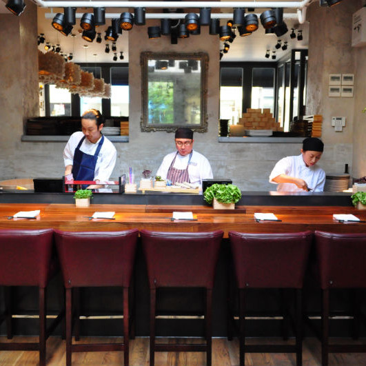

<!DOCTYPE html>
<html>
    <head>
        <link rel="stylesheet" href="styles/normalize.css">
        <link rel="stylesheet" href="styles/styles.css">
        <title>Wasabi</title>
    </head>
    
    <body>

        <div id="content">
                
            <!-- <div class="header">
                <div class="logo"></div>
                <div class="bounce">
                    <p class="arrowDown"></p>
                </div>
            </div>
            <nav>
                <ul class="menu">
                    <li class="menu-item menu-item-selected" id="about">About</li>
                    <li class="menu-item" id="menu">Menu</li>
                    <li class="menu-item" id="location">Map</li>
                </ul>
            </nav>
            <div class="inner-content">
                <h1>About us</h1>
                <p style="padding: 0px 20%;">
                    Wasabi's Sushi Bar serves a wide selection of sushi classics, 
                    such as sashimi, nigiri and maki sushi. In addition, our sushi
                    chefs exhibit many modern interpretations and innovations of 
                    sushi dishes in our specialty signature rolls. We take pride 
                    and passion in serving this artistic culinary form. The exclusive 
                    use of high quality and fresh ingredients is our top priority. 
                </p>
                
            </div> -->

        </div>

        <script src="main.js"></script>
    </body>
</html>